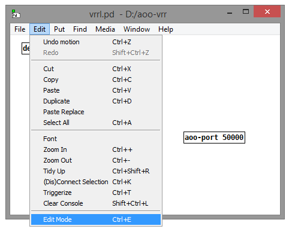
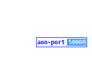
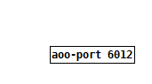
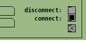
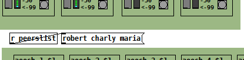
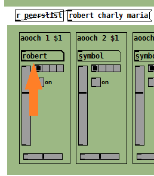
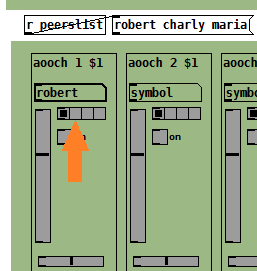
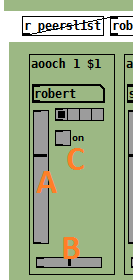
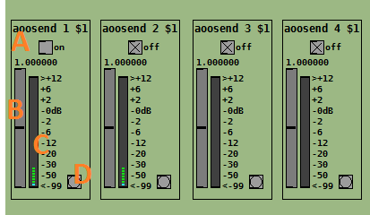

Virtual Rehearsing Room Lucarda. Un grupo de abstracciones en Pd para facilmente usar el AOO external.
Este proyecto esta en fase de testeo
AOO apunta a compartir audio en alta calidad y baja latencia por internet o la red local.
Click-aqui para una guia de instalacion de Pd y AOO en tu sistema.
Click-aqui para descargar vrrl.
Cuandoo hallas instalado todo inicia Pd y abri el archivo vrrl.pd
Mas adelante click-aqui para leer como hacer port-forward en tu router si hay problemas de conexion.
Click en el menu edit /edit mode
Click en la caja [aoo-port 50000] y selecciona el numero 50000:
Cambialo a cualquier numero entre 1025-65000 y clickea en cualquier parte de la zona blanca por fuera de la cajita.
Click en el menu edit /edit mode y des-selecciona edit mode.
Click en el menu file / save
Click en la cajita [aoo-port xxxx] para abrir la ventana de controles.
Click en la cajita [symbol] y tipea tu nombre de usuario y presiona ENTER. Este es el nombre que los demas usuarios usaran para identificarte.
Hace lo mismo y crea un password para tu usuario.
Unirse o crear un grupo
Si no estas creando el grupo ingresa los datos del grupo al que te invitaron.
Click en el boton "connect".
Si todo fue bien (ver la imagen) ya estas connectado con otros usuarios o creaste exitosamente un nuevo grupo.
El servidor AOO al que estas conectado tiene los datos de las otras computadoras en el grupo y los usa para que las computadoras se conecten entre si. El audio que envias y recibis no pasa por el servidor AOO.
Vas a tener una lista con los otros usuarios conectados. La lista se actualiza cuando alguien entra o sale del grupo:
Click en la cajita [symbol] y tipea el nombre de usuario y apreta ENTER. Este canal esta ahora recibiendo audio de ese usuario.
Podes seleccionar cual de los 4 canales posibles de ese usuario.
Controles basicos:
A: Volumen
B: Paneo (izquierda-derecha)
C: on/off (mute/un-mute) (connect/disconnect)
Estos 4 canales coinciden con los canales de entrada de tu placa de sonido.
A: Start(on)/Stop(off) streaming a los otros usuarios.
B: Gain. Ajusta el volumen de lo que estas enviando a los demas y tambien lo que escuchas de vos mismo (si estas monitoreando tu señal)
C: Vumetro. Para verificar que tu señal no exceda los -0dB
D: Ajustes de calidad del streaming.